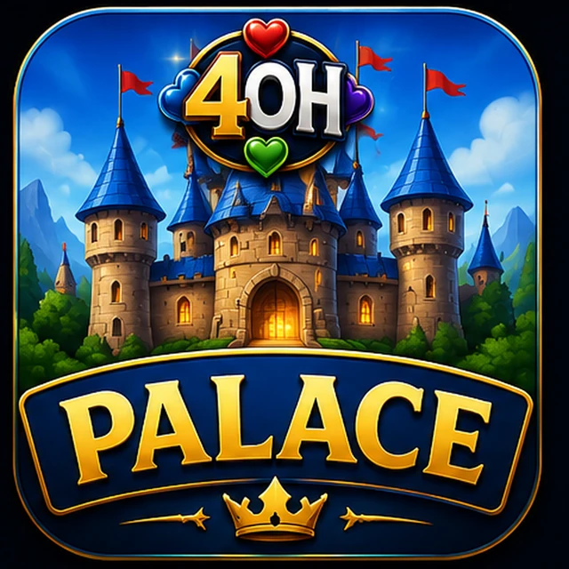

The studio behind Palace
Four daughters. Four hearts. One wonderfully serious case of game night.
This did not begin in a boardroom. It began where the good stuff usually does: around a family table, with four daughters, plenty of opinions, and the kind of laughter that makes everyone stay for one more hand.

Why Four of Hearts exists
The score is smiles.
The four hearts are four daughters. The studio is the promise that grew around them: life is short, play is important, and a great game can turn an ordinary night into family folklore.
We care about sharp rules, friendly teaching, beautiful tables, and that electric second when everybody understands the game and nobody wants to leave. That is the philosophy. The people came first.
One Family. Many Games.
Meet the founder
A gameologist with a very long field study.
For more than fifty years, the founder has been playing, teaching, testing, arguing about, laughing over, and trying to understand games. More than twenty of those years included examining strategy and human interaction in a university environment.
But the interesting part is not the résumé. It is the question he keeps bringing back to the table: why does this game make people stay? Four of Hearts turns that lifelong curiosity into products—clear enough to welcome a newcomer, deep enough to reward a regular, and human enough to create a story.
“Gameologist” is our playful word for that obsession. It is not a degree, license, professorship, employer, or publication claim. It is a person who has spent a lifetime watching what happens when rules meet people.
Why Palace leads
The notorious table legend deserves a proper app.
Palace—also called Shed and, at some tables, a traditional name we keep behind an adults-only Easter egg—travels by memory. Match it, beat it, use a wild card, survive three levels. Easy to teach. Impossible to forget.
Four of Hearts is finally giving it the digital castle, lively table, and playful teaching it deserves.

Founder biography statements are founder-supplied and remain marked for final factual approval. No degree, professorship, employer, or publication claim is made.